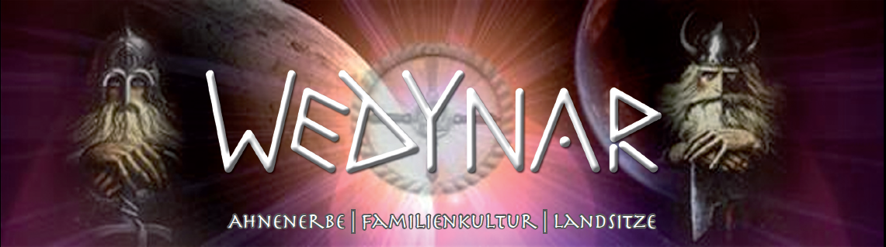
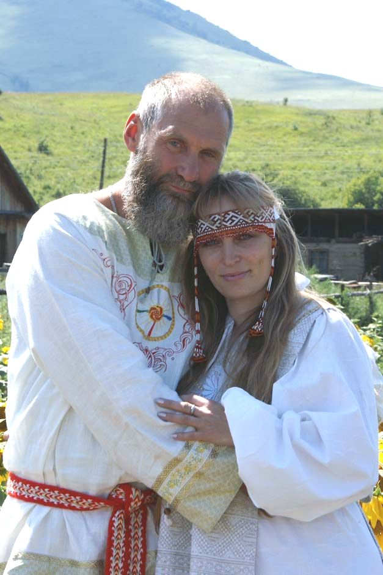

Авторская программа оздоровления человека и восстановление целостности его Триединства: Духа, Души и Тела:
«Ведическая Родовая Здрава».
Проводят авторы программы: Паньков Олег Геннадьевич - историк-исследователь летописи Ведической Культуры Семьи и Рода в Наследии Предков, русский ведун, знахарь с Алтая и Панькова Елена Геннадьевна - специалист кранио-сакральной терапии, специалист по иридотестированию.

www.akademie-rod.de
Концепция программы оздоровления «Ведическая Родовая Здрава»
Программа направлена на изучение и осознание человеком Ведических Родовых Кононов.Познание Ведических знаний даёт возможность обрести родовые ключи к восстановлению связи с забытыми Родными Истоками.Познание своей Сути в миропонимании Ведической Культуры Семьи и Рода в Наследии Предков есть Новое рождение Души. Где вместе в одном ритме дыхании Природы происходит восстановление самосознания и совершенства Триединства: Духа, Души и Тела.
Как встать на здравый путь долголетия? Как достичь гармонии взаимопонимания с родными и близкими? Как выровнять материальную и духовную чаши жизни? Как взрастить здравых и достойных наследников? На такие вопросыможно получить ответы, подняв свою родовую память, где они, и записаны на генном уровне от Первоистоков, от своих Предков - Богов. Родовые ключи откроют многие двери, за которыми были спрятаны тайники богатства Ведических знаний многомудрого народа. Это даст возможность планирование дальнейшей судьбы на основе осознанного исполнения своего Рока, сотворение дальнейшей добродетельной судьбы. Ведание и применение техники безопасности взаимодействия с Силами Природы во избежание «кармического удара», осознанное исправление кармы. Создание добродетельной кармы. Создание добродетельного потомства. Осознание и управление Силой Триединства Рода для: оздоровления тела, улучшение отношений в семье и трудовом коллективе, обретения любимого дела Жизни, достижения финансовой независимости, восстановления Родовой Памяти, осознания Правды Рода, исполнение долга перед Родом, осуществление своего высшего предназначения на Земле.
Наши Предки говорили, что все проблемы и болезни – от ума. Ум будит эмоции, создавая множество переживаний, образ каких-либо претензий к себе и к миру. Чувства и образы создаёт сильные энергетические потоки, достаточно одного такого ощущения в детстве – и жизнь уже пойдёт другим путём, в зависимости от качества энергий. Все болезни, ранее старение и жизненные неприятности – результат проявления негативных потоков.
Жизнь – это Путь Совершенства Триединства: Духа, Души и Тела. Здоровье есть отражение ведущих направлений движения: «Куда и как ведёт себя человек?». И надо признать, в действительности, что сакральный смысл значения: веды и ведать – суть ведающего человека, т.е. современным значением – знающего движение Жизни – того Пути Совершенства Триединства.
Наша программа помогает гармонизировать своё сознание, разобраться с первопричинами болезни, создать здоровое энергоинформационное поле своих тел, вернуть силу молодости, наполнить себя энергиями любви, радости, счастья, здоровья и самоисцеления.
Задачи программы:
- научить каждого желающего участника программы разбираться в потоках энергий, которые проникают в слои жизни. И включить родовую память в жизненный поток, чтобы обрести гармонию.
- научить человека развивать свои психофизические возможности для самостоятельного нормирования здоровья и событий жизни на основе ведических родовых знаний, чтобы изменить свои духовные и душевные качества, которые включат процессы самоисцеления тела, чтобы вернуть утраченное здоровье и радость жизни.
- научить человека самому правильно нарабатывать положительную энергию, сохранять её, а уже потом правильно делиться ею и дарить её.
- дать человеку самому реализовать свои возможности и проявить свой талант при полной ответственности и правильном понимании Космических Законов.
Программа «Ведическая Родовая Здрава»с общим Базовым WEDINAR - Курсом -«Ведическая Культура Семьи и Рода в Наследии Предков» - это три «Ступени Возрождения», что включает в себя поэтапное её осуществление. Каждая «Ступень Возрождения» достигается за три дня, то тогда все три «ступени» за девять дней. Проведение программы возможно как за девять дней подряд, так и делением на три части: каждые три дня в отдельности. Данные условия зависят от пожелания комплектующейся группы. Программа рассчитана на человека, достигшего 18 летнего возраста, с учётом добровольного желания оздоровления по ведическим методам.
Первая ступень:
В первые три дня для правильного восприятия ведических знаний и осуществления оздоровительной Программы«Ведическая Родовая Здрава» проводится предварительная встреча участника программы, биоэнергоинформационная диагностикаи коррекция состояния его здоровья. Во время собеседования определяется мотивация, «смысл Жизни и её цели - ради которых стоит быть здоровым». Для участников составляется удобное для них расписание времени для прохождения сеансов.
- Выполняется биоэнергоинформационная и коррекция целостности здоровья Триединства: Духа, Души и Тела. Определение негативных воздействий на биополе человека с помощью методик биолокации и Ведической методики по русо-арийской шестнадцатеричной системе, позволяющей определить состояние биополя человека, его отдельных органов и систем, а также выявление имеющихся нарушений (т.е. энергетические пробои) в биополе и энергоинформационных центрах человека, с установлением первопричин появления отклонений в здоровье или появления негативных событий в жизни человека.Коррекция проводится с учетом индивидуальных особенностей человека.
- Восстановление единой целой Родовой связи человека с его Родом, Предками, Прародителями - Богами.
- Восстановление шестнадцатеричной системы восприятия – АС (Бог, живущий на Земле) и семейно-родовых связей через очищение и коррекцию ауры.
- Открытие Родовой памяти через духовное, душевное, физическое и нравственное Наследие Предков, что способствует укреплению взаимоотношенийв своих Родах и Семьях, которые и будут являться залогом настоящего и будущего благосостояния Духа, Души и Тела, а значит процветание Родового Древа.
- Очищение сознания, сверхсознания, подсознания, подключение родовых каналов через родовые энергетические каналы Предков мужского и женского начала, чакры Лада (Сурья-Солнце), кровные родовые предки по мужской линии – (подсверхсознания - энергия откровения) чакры Леля (Чандра- Луна), кровные родовые Предки по женской линии (подподсознание - энергия сокрытия).
- Устранение энергетических блоков, нарушающих правильное Родовое мировосприятие.
- Индивидуальная работа с причинно-следственными проблемами.
- Индивидуальные рекомендации.
- В процессе целения индивидуально каждому участнику происходит восполнение «Волшебного Слова» сакральной силы, в виде стихотворного послания из «Небесного Свитка Богов», которое и бывает так необходимо именно в этот жизненный период.
- Производится правка энергетического центра «Золотник»(пупочно-энергетический центр человека), от которого зависят все психоэмоциональные состояния человека(депрессии, отчаяние, беспричинные переживания, частые перемены настроения, отсутствие силы воли, характера). Так как многие физические, душевные и духовные проблемы здоровья имеют связи с нарушением работы этого энергетического центра «Золотник». Правка этого важного центра осуществляется старорусским массажем, который наделён древней методикой знахарства.
- Проводится воскотерапия - снятие с энергетических тел ауры, ментального поля человека старинным знахарским способом – выливание воском (избавление от испугов, тревог, страхов, проявлений заикания, негативных влияний из «вне»).
- Индивидуально каждому составляется персонально гороскоп Славяно-Арийского Коляды Дара Сварожьего круга.
- Для поддержания здоровья тела, проводится тестирование новой русской методикой: оценка паразитарной интоксикации и дефицита микроэлементов, которое производится с помощью прибора«ИридоСкрин»(разрешен к применению Минздравом, а также имеет разрешение для использования в странах Евросоюза) по радужной оболочке глаз. Каждый орган имеет своё отражение на радужке глаза, т.е. зону проекции, куда он и направляет сигнал через определённые центры головного мозга о своём состоянии. Изменения на радужной оболочке свидетельствуют об отклонениях в работе органов, т.е. тестирование поможет предупредить возникновение недугов. Составляется индивидуальная программа, которая является очищением от паразитов (грибки, вирусы, бактерии, простейшие, гельминты, (аскариды, лямблии, острицы, описторхи и т.д.), нормализует микрофлору, восстанавливает иммунитет растительными препаратами. Связывает и выводит из организма продукты жизнедеятельности паразитов и токсины. Питает организм жизненно важными микроэлементами, восстанавливает силы и резервы всего организма. Заполняется индивидуальная карта тестирования. Все полученные результаты тестирования хранятся в памяти компьютера, что позволяет в дальнейшем отследить изменения в состоянии здоровья человека.
Вторая ступень:
Программа предлагает трёхдневное обучение энергетического курса, куда входит ряд следующих основных тем WEDINARА - Базового Курса «Ведическая Культура Семьи и Рода в Наследии Предков»:
Первый и день: Введение в тему:
- В начале встречи - знакомство с участниками семинара по типу Вече.
- «Ведать - значит жить».
- Медитация статическая «Родные чертоги».
Второй день: Основы Ведической Культуры:
- «Ведические ключи развития человека»
- Медитация статическая «Родовой кристалл».
Третий день: Основы Ведической психологии:
- «Через прошлое в будущее, с настоящим обережным кругом».
- Медитация статическая «Сила Рода».
Занятия проходят с 10ч. до 19ч. с двумя перерывом по 30 минут
Третья ступень:
Программа этого раздела также охватывает трёхдневное обучение и направлена на практические занятия «Ведической Родовой Здравы». Место проведения занятий зависит от желания участвующих и погодных условий, т.е. желательно трёхдневный выезд на природу. Расписание занятий составляется под возможности и желание участников. Практика направлена на освоение следующего:
Первый день:
- Научение составления жреческого магического квадрата. (Славяно-арийские образы числа Жизни (кому, что дано от рождения), определение графиков жизненной и энергетической активности, жизненные циклы, основные средние меры, основные большие меры, меры времени).
- Научение участников семинара составлению своего индивидуального графика гороскопа жизненной и энергетической активности человека, числа жизни.
- Медитация динамическая и статическая «Пробуждение Богини» - для женщин, а для мужчин «Суть мужской силы».
Второй день:
- Славянская гимнастика и дыхательные упражнения.
- Введение в традиционный ведический праздник (сила хоровода, сила природных стихий).
- Медитация динамическая и статическая «Релаксационная медитация природных стихий».
Третий день:
- Мастер-классы по традиционному мастерству: обережным куклам, росписи, резке по дереву и др.
- Медитация динамическая и статические «Девять чакровых цветов» и «Поле любви».
- В завершении программы – Вече у костра.
В итоге завершения программы «Ведическая Родовая Здрава» - достигнутые результаты закрепляются дальнейшей самостоятельной духовной работой каждого участника. Всем участникам индивидуально каждому выдаются для самостоятельной работы рекомендации - в виде «домашних заданий» для закрепления действия оздоровительной программы, а также предлагаются дополнительные материалы на DVD-диске и литература. Каждого участника в течение последующих 3 месяца ведущий программы может всегда принять на дополнительные бесплатные консультации.
Только от совместных усилий целителя и желания самого человека изменить себя, пересмотреть свою жизнь и принять на себя ответственность за свое здоровье, возможен стойкий положительный результат, а не сиюминутное облегчение. Мы только помогаем каждому понять и устранить первопричину, а остальное может каждый сам.
Ведите себя к совершенству во всей гармонии Триединства: Духа, Души и Тела! Будьте всегда здравы, радостны и счастливы, успешны и удачливы, любите и будьте любимы!
Заявки и предложения присылайте на электронный адрес:
e-mail: rodaslavie@yandex.ru
или звоните по телефонам: 89609492190 и 89237171519